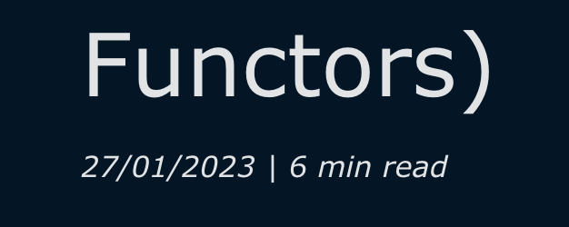

A while ago, I decided it was time to start blogging again, and I used Robert Pearce’s excellent hakyll-nix-template to bootstrap this blog and as a way to learn Hakyll and Nix a little bit better. If it is your personal blog after all, you can use whatever you want, right? 😉
If you also use Hakyll, you might have wondered how can we calculate the estimated reading time for each post in a simple way, so here is the Haskell code:
readingTimeField :: String -> Context String
readingTimeField key =
field key calculate
where
calculate :: Item String -> Compiler String
calculate = pure . withTagList acc . itemBody
acc ts = [TagText . show $ time ts]
-- M. Brysbaert, Journal of Memory and Language (2009) vol 109.
-- DOI: 10.1016/j.jml.2019.104047
time ts = foldr count 0 ts `div` 238
count (TagText s) n = n + length (words s)
count _ n = nWhat’s funny about the above implementation is that I found an actual research paper that tells us the average reading speed for adults and non-fiction, so I did not have to guess it!
This is the actual code I’m using in my blog, you can have a look at the whole codebase here, its Open Source! 🕊️
After creating the readingTimeField function, you can use it in your postCtx like this:
postCtx :: Context String
postCtx =
constField "root" mySiteRoot
<> constField "siteName" mySiteName
<> dateField "date" "%d/%m/%Y"
<> readingTimeField "readingtime" -- this is the new addition
<> defaultContextAnd finally, you can use it in your templates like this:
<div class="info">
<small class="italic">$date$</small>
<small class="italic"> | $readingtime$ min read</small>
<!-- ... -->
</div>It is as simple as it gets, the end result looks like this:

Hope this was useful for you too! If you have any questions, feel free to reach out to me on Twitter or BlueSky 🦋.